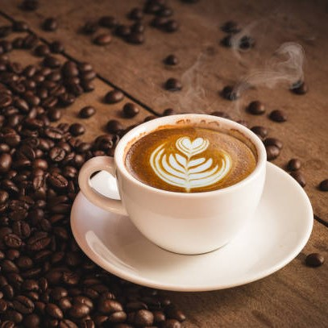

Productos
¡Disfruta nuestros deliciosos productos elaborados con el mejor café!

Café Expresso
El café solo o expresso, consiste en una bebida que se prepara en solo unos segundos infusionando los granos de café en agua hirviendo.
Café Americano
Agua y café son los dos únicos elementos de un americano. La proporción de agua que contine es mucho mayor y al estar menos concentrado, se reduce mucho la potencia de sabores y aromas.

Café con leche
Se añade más cantidad de leche, lo que obtenemos es el clásico café con leche.